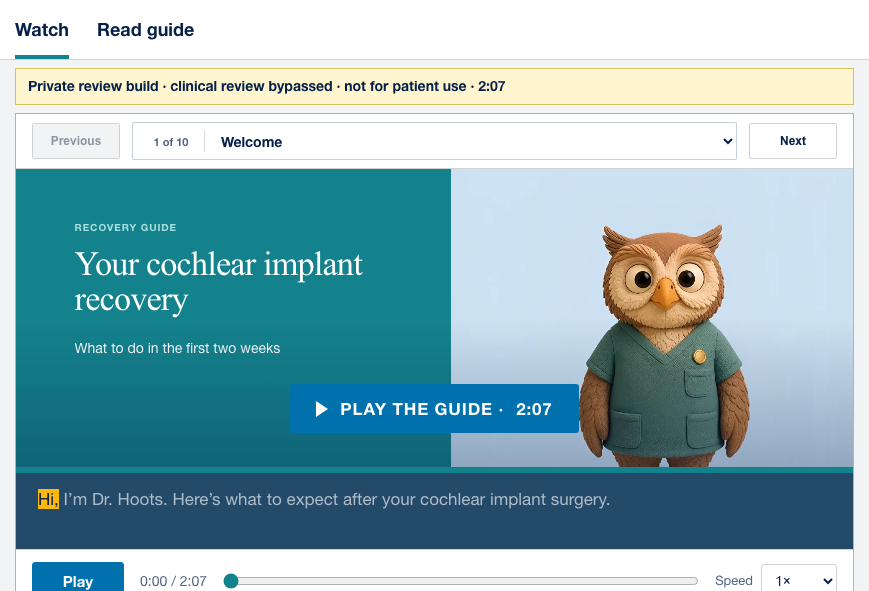
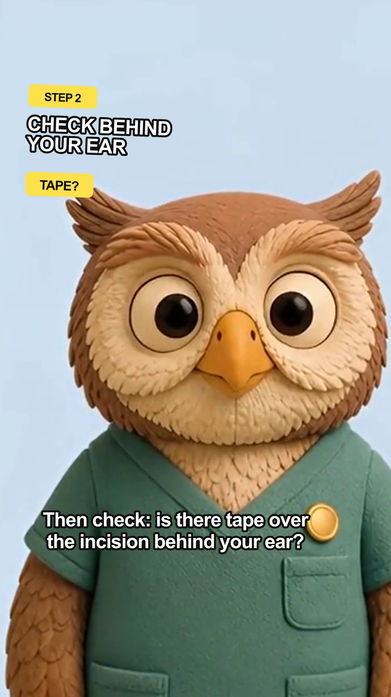
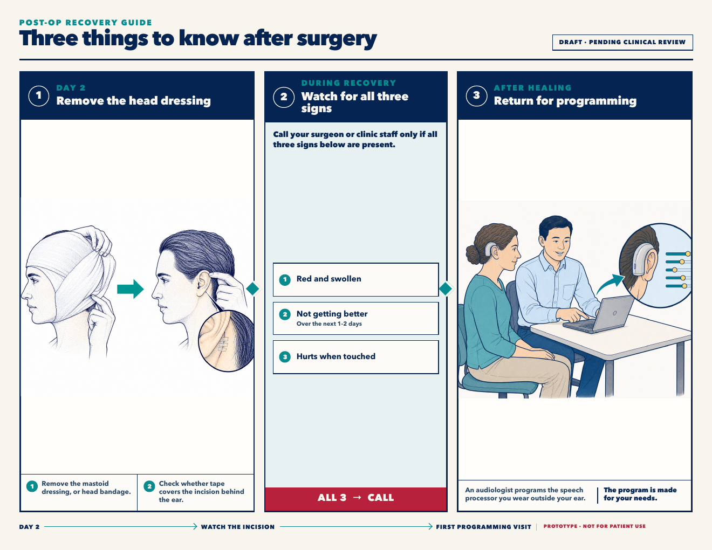

Alternatives to text-only after-visit summaries
-
01
Mascot-guided video
Tests whether a friendly narrator and optional chapters make a complete recovery explanation easier to follow and revisit.

-
02
TikTok-style video
Tests whether short, captioned Dr. Hoots videos—one recovery idea at a time—make instructions easier to absorb in sequence.

▶ 0:31 -
03
Airline safety-style illustrated guide
Tests whether we can generate accurate recovery illustrations and use them in a safety-card system people can scan and remember on screen or in a take-home PDF.
